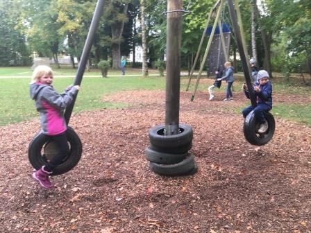

Alle wichtigen Themen auf einen Blick
Unser Unterricht
In den klassischen Schulfächern sowie in individuellen Förder- und Schwerpunktgruppen werden die Kinder gefördert und können so ihre Fähigkeiten weiterentwickeln.
Lerngruppe:
- Mathematik: In vier Wochenstunden werden die Schülerinnen und Schüler, organisiert in Kleingruppen, ihrem jeweiligen Leistungsstand entsprechend unterrichtet. Der Bogen spannt sich vom Rechnen im Zahlenraum 6 bis zum Lösen von Textaufgaben, das Erlernen einfacher Multiplikationen und schriftliche Addition im Zahlenraum 100.
- Deutsch: Sprechen, Lesen und Schreiben sind die wichtigsten Kulturtechniken und werden individuell erlernt und trainiert.
Förder- und Schwerpunktgruppe:
- Schüler der Fördergruppe erleben neue Erfahrungen und haben Spaß an individuellen und gemeinsamen Aktivitäten. Spielen, Entspannen, Musizieren, Tanzen, Malen und Gestalten sind täglich am Stundenplan des SPZ.
Nachmittagsbetreuung & GTS
Wir bieten unseren Schülern am Montag, Dienstag und Donnerstag eine Nachmittagsbetreuung an.
Die Kinder bleiben nach Ende des regulären Unterrichts noch bis 16.00 Uhr in der Schule und werden dann vom Schulbus nach Hause gebracht.
Zuerst wird das Mittagessen eingenommen und anschließend gibt es bis ca. 14.00 Uhr eine ausgiebige Ruhe- und Erholungszeit, in der Kinder, wenn sie wollen, auch schlafen dürfen. Für die restlichen 2 Stunden von 14.00 bis 16.00 Uhr gibt es ein lockeres Freizeitprogramm, das von einer Lehrkraft geplant und zusammen mit zwei bis drei BetreuerInnen durchgeführt wird. Wenn es das Wetter zulässt, wird regelmäßig ins Freie gegangen.
Spiele, kreatives Gestalten, Bewegung im Gymnastikraum oder im nahen Stadtpark, sowie Wanderungen in der näheren Umgebung stehen auf der Tagesordnung.
Für die Teilnahme an der Nachmittagsbetreuung ist eine gesonderte Anmeldung erforderlich.
Die Kosten betragen pro Nachmittag 25,- monatlich (250,- jährlich), welche an die Gemeinde Mattighofen zu bezahlen sind. Darüber hinaus fallen noch Kosten von 3 .- Euro pro Portion für das Mittagessen an
